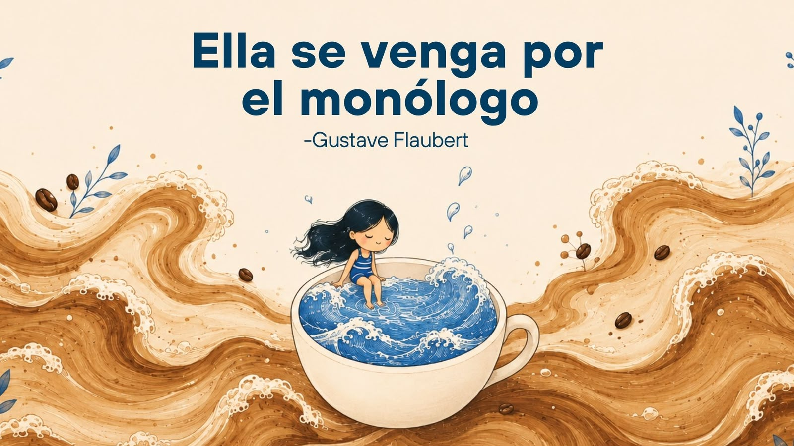

¿Quién soy?
~~~
Soy hija, hermana, sobrina, nieta, estudiante, amiga...
muchas versiones de mí misma.
Hay partes de mí que me han hecho quien soy hoy: algunas bonitas, otras difíciles, pero todas necesarias. Entendí que soy una Ingrid diferente para cada situación, y está bien así. Estoy orgullosa de cada una de ellas, de lo que fui y de lo que soy.
Me amo, en serio. Amo cada versión de mí.
También creo que las personas que me rodean me van formando poquito a poco, dejando algo en mí: energía, emociones, aprendizajes.
Y sí, es bonito.
~~